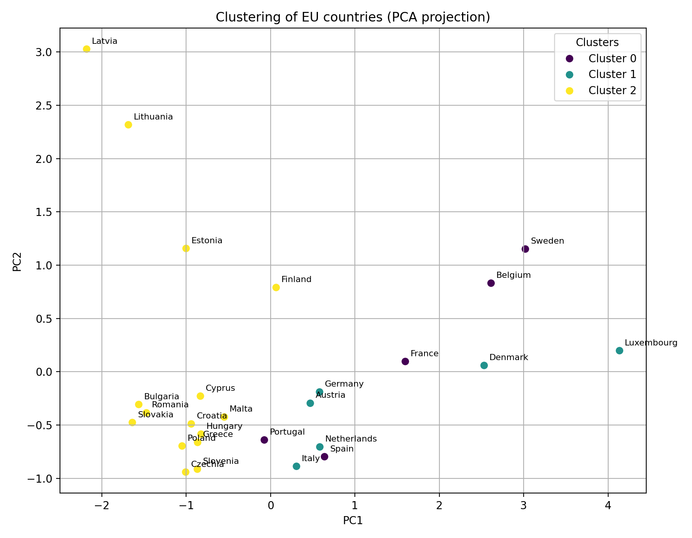
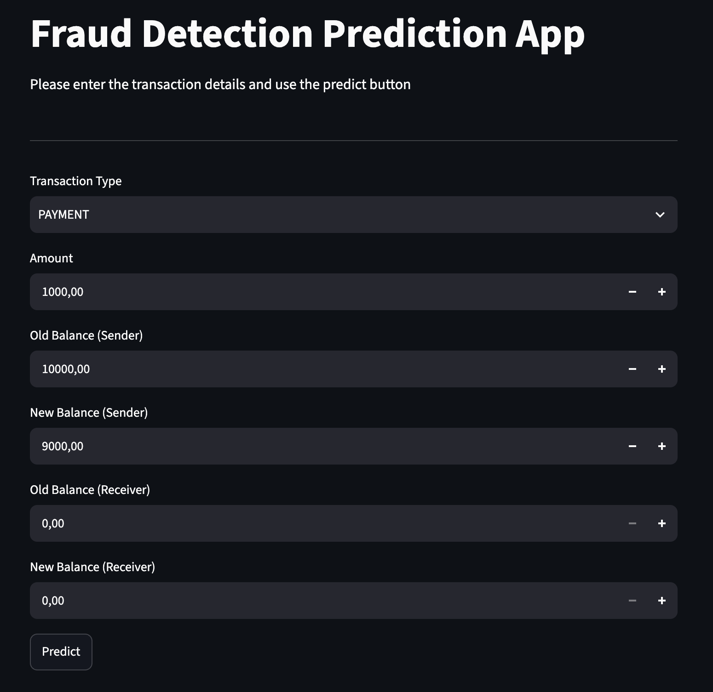

Data Analytics | Data Science | Statistika
Ahoj! Jsem Max Kubíček a baví mě objevovat příběhy ukryté v datech. Vystudoval jsem Aplikovanou informatiku na VŠE, díky čemuž mám blízko jak k vývoji a technologiím, tak k ekonomickému a byznysovému myšlení. Zaměřuji se na datovou analytiku a Data Science.
Co umím a s čím pracuji: Python, SQL, Power BI, Pandas, Git, GitHub, Scikit-learn, Matplotlib
Co mě baví: Čištění a příprava dat, explorativní analýza, tvorba interaktivních reportů a objevování souvislostí tam, kde je ostatní nevidí.
Datově-analytický projekt využívající metody strojového učení pro analýzu podobnosti profilů kriminality mezi evropskými státy.
Nástroje: Python, clustering, data visualization
Klikněte pro detail a kód »Projekt zaměřený na návrh datového skladu, práci s SQL/Pythonem a tvorbu analytického dashboardu pro e-commerce data.
Nástroje: SQL, Python, Git, GitHub
Klikněte pro detail a kód »Projekt zaměřený na detekci podvodných finančních transakcí pomocí strojového učení a webové aplikace ve Streamlitu.
Nástroje: Python, Pandas, Scikit-learn, Logistic Regression, Streamlit
Klikněte pro detail a kód »Projekt zaměřený na návrh datového skladu, práci s SQL/Pythonem a tvorbu analytického dashboardu.
Ukázka dashboardu / výstupu:

Ukázka kódu (SQL / ETL):
Datově-analytický projekt zkoumající podobnosti a vývojové trendy kriminality napříč evropskými státy pomocí pokročilých metod výpočetní statistiky a strojového učení.
Ukázka vizualizace / shlukové analýzy:

Ukázka kódu (Data Pipeline & Clustering):
Ukázka Streamlit aplikace:

Projekt zaměřený na detekci podvodných finančních transakcí pomocí průzkumné analýzy dat, předzpracování, logistické regrese a webové aplikace vytvořené ve Streamlitu.
Model vyhodnocuje typ transakce, její částku a změny zůstatků na účtu odesílatele a příjemce.
Pro zpracování dat je použit Scikit-learn Pipeline kombinující standardizaci numerických proměnných, One-Hot Encoding a logistickou regresi.
Použité technologie:
Ukázka Machine Learning Pipeline:
Dataset:
Fraud Detection Dataset na Kaggle
GitHub:
Zobrazit repozitář
Položky určené k trvalému smazání:
„Můj úplně první skript na VŠE. Každý nějak začínal – 50 podmínek IF a nulové ošetření chyb. Naštěstí dnes už píšu kód trochu jinak.“